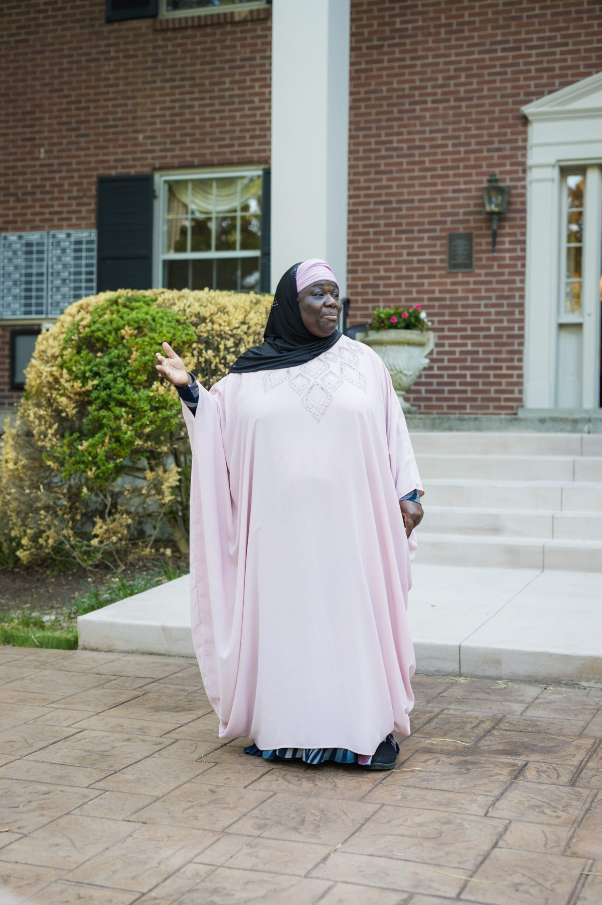
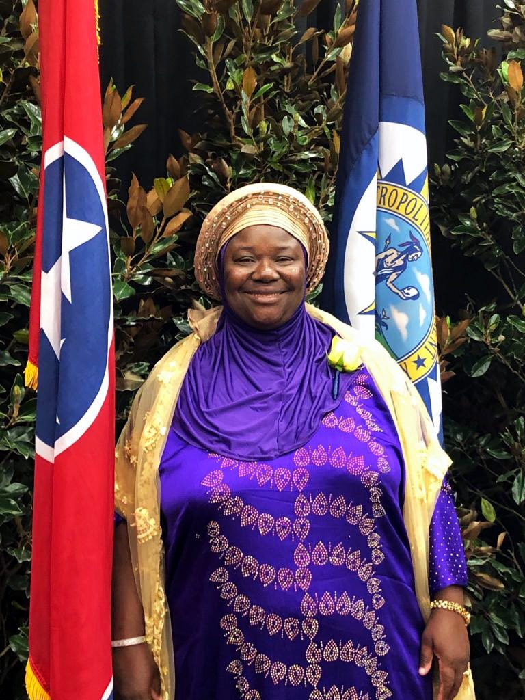
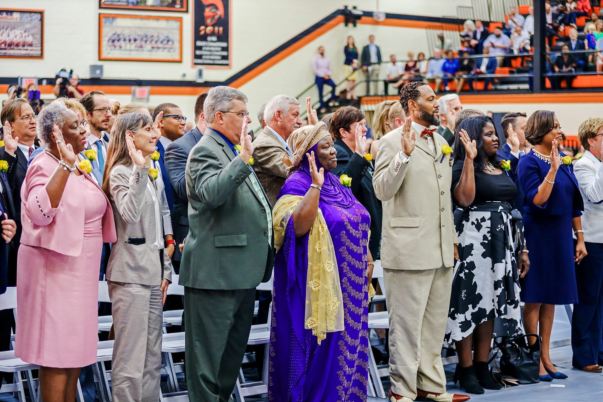
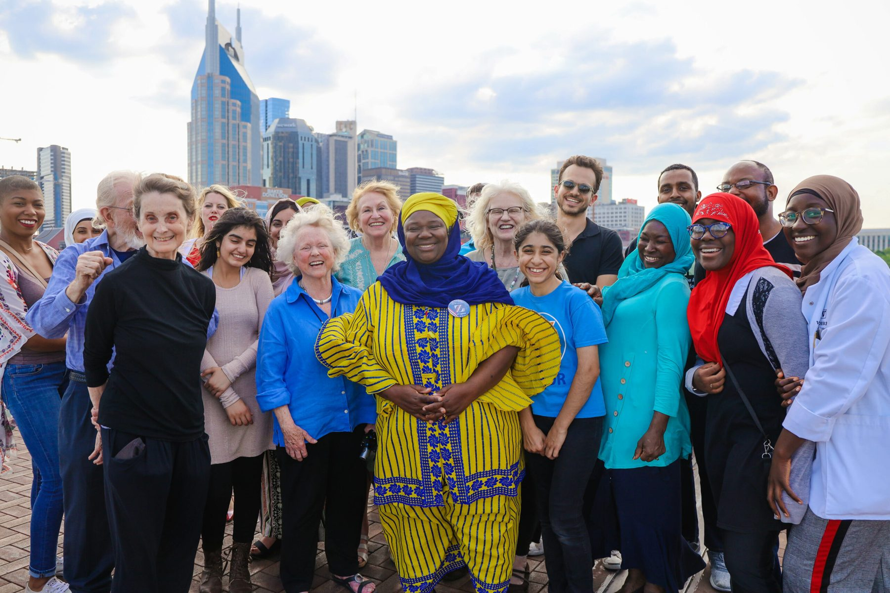
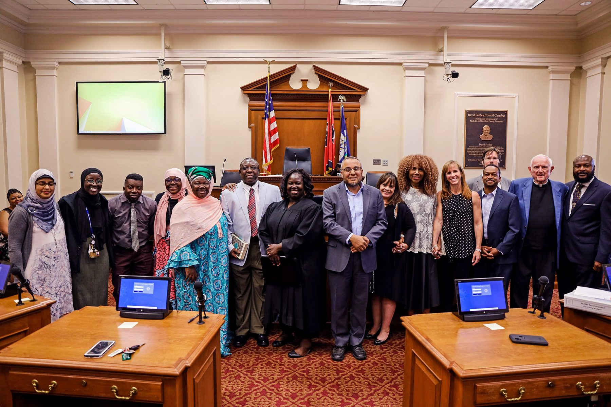
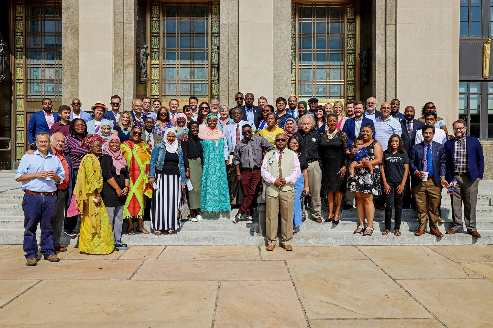

#1 Most votes, Metro Council 2023
Proven
Nashville's top vote-getter in 2023, no runoff needed.
Nashville's top vote-getter in 2023, no runoff needed.
A CPA who reads every line of the $3.8 billion budget.
Showing up in every corner of Davidson County.
Proven. Prepared. For all of Nashville.



A CPA, a mother of five and Nashville's top vote-getter for Metro Council.
Born in Ibadan, Nigeria, Zulfat came to Nashville in 1993, built her own accounting firm, and has spent three decades serving Tennessee. On the Council she has chaired Affordable Housing and Education and served as President Pro Tempore.
Muslim elected to Nashville's Metro government
Muslim woman elected in Tennessee
Nigerian woman elected to office in the U.S.
Immigrant elected to an at-large Council seat
First person of color to top the Council vote in Metro's 60 years
Only at-large candidate to win outright in 2023
Her story, in her own words.
Three decades of service, one step at a time.
Arrives with her family for her husband's Vanderbilt fellowship and joins KPMG as a CPA.
Serves the county governments of Hardeman, Haywood, Lake and McNairy counties.
State President of Business and Professional Women of Tennessee, then chair of Women's Day on the Hill.
Founding chair of the American Muslim Advisory Council. Tennessee Women's Hall of Fame, 2015.
Elected At-Large with 34,271 votes, the first Muslim in Metro government.
Renames Fifth Avenue for the civil rights icon. Wins the NEA's national civil rights award.
40,575 votes, the only at-large winner without a runoff. Elected President Pro Tempore.

Her eviction defense program becomes permanent after saving $3.4 million.

Asking all of Nashville to help her lead the Metro Council.
108 bills and resolutions led. 105 passed. Every bill number is public record.
A lawyer for every family facing eviction. Saved taxpayers $3.4 million, now permanent.
RS2022-1559 · BL2026-1382Fifth Avenue renamed for the congressman who trained in Nashville.
BL2020-45020% of housing grants reserved for community groups, made permanent.
BL2021-725 · BL2023-1731$3 million to keep families housed during the pandemic.
RS2021-1116Strong oversight of Metro dollars, without burying small groups in paperwork.
BL2021-1049Two rounds of procurement reform to keep bidding open and honest.
BL2020-423 · BL2025-1064Transit centers named for Ernest "Rip" Patton and Elizabeth Duff.
BL2022-1332 · BL2022-1331Pushed to let Muslim girls compete in school sports wearing a hijab.
RS2020-578A special court docket to keep storm-displaced families housed.
RS2026-1799South Street renamed for a Nashville community leader.
BL2025-1108Condemned antisemitism and declared United Against Hate Week.
RS2023-2085 · RS2024-734Recognized across Tennessee and the nation for civil rights, women and working families.
National Education Association. Also given to Michelle Obama.
YWCA Nashville and Middle Tennessee.
Tennessee Economic Council on Women.
As President of the Metro Council, she'll lead it the way she has served: prepared, open and fair.

She'll chair every Council meeting: on time, clear agendas, fair to all 40 members.
The Vice Mayor names every committee and chair. She'll pick for skill, not favors.

Public hearings where residents get real time at the mic, from every district.

When the Council ties, she breaks it. Families and schools come first.

A CPA leading the body that passes the budget, so every dollar is explained.
If the mayor's office is ever vacant, the Vice Mayor steps in. She's ready.
The Vice Mayor is President of the 40-member Metro Council. She runs every Council meeting, appoints every committee and its chair, leads the Council's executive committee, casts the vote that breaks a tie, and becomes mayor if that office is vacant. Elected by all of Davidson County.
Stable housing is essential to a thriving community.
Zulfat Suara, WSMV, June 2026Every registered voter in Davidson County can vote for Vice Mayor.
| Absentee ballot requests open | May 7 |
| Voter registration deadline | July 6 |
| Early voting begins | Fri, July 16 |
| Last day to request a mail ballot | July 26 |
| Early voting ends | Sat, July 31 |
| Election Day (7 a.m. to 7 p.m.) | Thu, Aug 5 |
| Runoff, if no candidate wins a majority | Sept 16 |
Election Day is set by the Metro Charter. Other dates are calculated from Tennessee election law and the 2023 schedule, and will be confirmed when the Davidson County Election Commission publishes the official 2027 calendar. Election Commission: 1281 Murfreesboro Pike, Nashville, TN 37217 · 615-862-8800.
During early voting you may vote at any site in Davidson County. These are the 15 sites used in the most recent county election (November 2026). The 2027 list will be posted by the Election Commission and updated here.
Thursday, August 5, 2027. Polls are open from 7 a.m. to 7 p.m. If no candidate wins a majority, the top two meet in a runoff, expected Thursday, September 16, 2027.
Tennessee law starts early voting 20 days before the election and ends it 5 days before, so early voting is expected from Friday, July 16 through Saturday, July 31, 2027. Sites usually open at 8 a.m. The Election Commission will confirm dates, hours and locations.
During early voting you can vote at any early voting site in Davidson County. On Election Day you must vote at your assigned precinct. Look it up at tnmap.tn.gov/voterlookup or nashville.gov/vote.
Yes. The Vice Mayor is elected countywide, so every registered voter in Nashville and Davidson County, in every council district, can vote for Zulfat Suara.
A Tennessee or federal photo ID, even if it is expired. Examples: a Tennessee driver license, U.S. passport, military ID, or Tennessee handgun carry permit with photo. College student IDs are not accepted. Free photo IDs are available at Driver Services Centers.
Register online at GoVoteTN or with a paper form. Your registration must be submitted or postmarked 30 days before the election, expected Tuesday, July 6, 2027.
Tennessee allows absentee voting for specific reasons, including being 60 or older, being out of the county during early voting and Election Day, illness or disability, or caring for someone who is ill. Requests are accepted 90 to 10 days before the election. Call the Absentee Department at 615-862-8815.
Volunteer, host a house party or fundraiser, request a yard sign, or donate through ActBlue. Use the forms in the Get Involved section of this page.
Neighbors talking to neighbors wins elections. Pick a way to help.